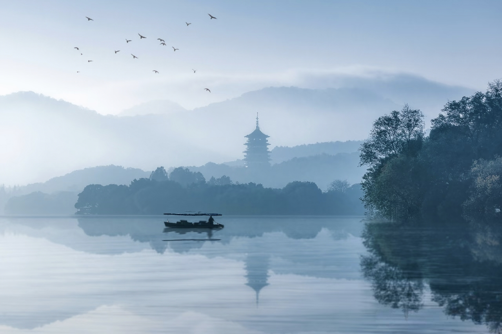
TL;DR — Hangzhou in 30 Seconds
- West Lake is worth the hype — but go at sunrise, not 11 AM with the selfie-stick crowd.
- The tea villages are the real draw. Longjing, Meijiawu, Manjuelong — 20 minutes from downtown by taxi, and they feel like another century.
- Stay in Xihu District for first-timers, Gongshu or Binjiang if you want fewer tourists.
- 3 full days is the sweet spot. Day 1: Grab a shared bike, loop West Lake + explore the hills. Day 2: Tea villages + Lingyin. Day 3: CBD, neighborhoods + food crawl.
- Hangzhou food is different from what you think of as "Chinese food." Subtle, seasonal, not spicy. The local pride is Longjing shrimp and Dongpo pork — both worth the hype.
- Getting around is easy. Metro, shared bikes, DiDi — all covered in our other guides. Hangzhou's metro now connects the airport, West Lake, and all major neighborhoods.
First-Time Visitor? Start Here.
Xihu District
Near Fengqi Road or Longxiangqiao metro. Walking distance to the lake, easy access to everything.
3 full days
Day 1: Bike West Lake + hills. Day 2: Tea villages + Lingyin. Day 3: CBD + food crawl.
Booking near the train station
It's transport infrastructure, not a neighborhood. Stay near the lake or in Gongshu instead.
Send Me the Checklist →
Why Hangzhou — and Why Not Just Shanghai
Shanghai shows you what China built in 30 years. Hangzhou shows you what China has been building for 2,200. This is a city where a 1,700-year-old Buddhist temple tucked into forested hills sits a 20-minute taxi ride from Alibaba's global headquarters. Where tea farmers still roast leaves by hand in iron woks in the morning, and AI engineers from the same village commute to companies worth tens of billions in the afternoon.
What sets Hangzhou apart isn't old-meets-new — plenty of cities do that. It's how nature and urban life don't just coexist here, they interlock. You bike past a UNESCO World Heritage lake on your morning commute. You eat ¥25 noodles in a 30-year-old shop, then walk two blocks to a startup campus with better architecture than most Western universities. The hills aren't a weekend escape — they frame every skyline. The tea terraces start where the metro line ends. This isn't a city with a famous lake; it's a city shaped by one.
Marco Polo called it "the city of heaven" 700 years ago. Today it's also the city of Alibaba, DeepSeek, and an AI ecosystem that's reshaping global tech. The magic of Hangzhou is that neither fact cancels the other out. Come on a spring morning when mist hangs over West Lake, then spend the afternoon walking through a tech park where the future is being built — and you'll understand why this city doesn't fit into anyone's idea of "China."
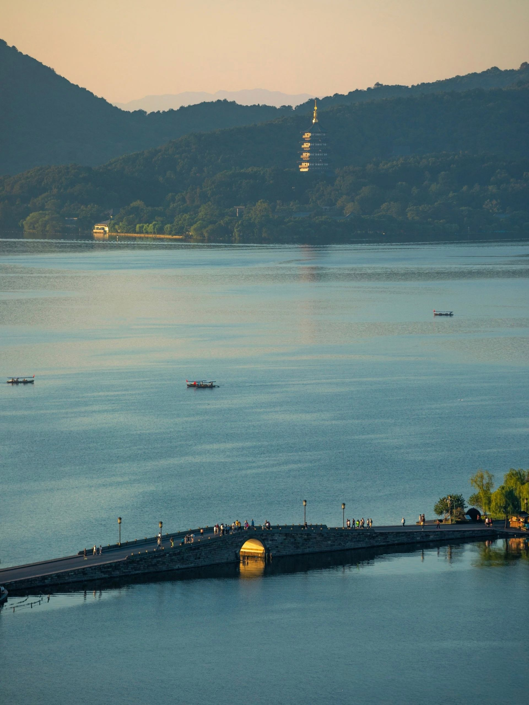
3-Day First-Timer Route
Here's the route I send to friends visiting Hangzhou for the first time. It's not a minute-by-minute itinerary: it's a shape for three days that avoids the most common first-timer mistakes and hits the things that actually matter.
Day 1: West Lake by Bike + the Old City at Dusk
Start early. Grab a shared bike (guide here) by 7:00 AM and ride the full 12 km lake loop. At sunrise the Su Causeway is almost empty: peach trees, willow fronds, six stone bridges, mist on the water. Stop at the Bai Causeway and Broken Bridge, then pedal up to Solitary Hill for the view back across the lake. By 10 AM the tour groups arrive and the magic fades, so that's your cue to leave.
Spend midday resting or exploring the lanes behind the lake. Late afternoon, head to the old city quarter: start at Southern Song Imperial Street, cut through Hefang Street when the lanterns come on, then walk north into Dama Lane and Shiwukui Lane for street food and market life. Dinner is whatever you grab from five different stalls. End the night at Wulin Night Market if you still have energy.
Day 2: Tea Villages + Lingyin Temple
Morning: go to Lingyin Temple. Arrive by 8:00 AM on a weekday — the grottoes and temple halls are best in early light, and the free-entry policy makes weekends extremely crowded. Reserve ahead through the "杭州灵隐飞来峰" mini program in Alipay; check current rules before you go. After the temple, eat the vegetarian noodles inside the grounds for lunch.
Afternoon: take a 20-minute taxi to Meijiawu (梅家坞) tea village. Terraced tea fields, family-run restaurants with tables between the rows, and farmers roasting leaves in iron woks. Order a pot of Longjing tea, a few home-style dishes, and sit until the light turns golden over the hills. This is the Hangzhou people mean when they say it's beautiful.
Day 3: CBD, Grand Canal + Neighborhood Food Crawl
Morning: cross the Qiantang River to Binjiang on Metro Line 1. Walk the riverfront promenade — the downtown skyline reflected in the water is the modern Hangzhou most tourists never see. Grab coffee at a café in the tech district, then head back across the river.
Afternoon and evening: explore Gongshu District along the Grand Canal. Start at Xiaohe Straight Street (小河直街), a preserved canal-side lane with small shops and tea houses. Walk north to Gongchen Bridge (拱宸桥) — the ancient stone bridge lit up at dusk is one of the best night views in the city. Eat dinner at Shengli River Food Street: 老头儿油爆虾 for Hangzhou-style shrimp, or any of the thirty-odd restaurants lining the canal. End with a walk along the water when the red lanterns are on.
When to Visit: Seasons, Honestly
There's a Chinese saying: "Above there is heaven, below there is Suzhou and Hangzhou." The saying is most true in spring (March–May) and autumn (September–November). Spring brings cherry blossoms and mild temperatures; autumn brings golden ginkgo trees and the best light of the year. These are the peak seasons, and for good reason.
Summer (June–August) is hot and humid — 35°C (95°F) days are normal, and you'll sweat through your shirt by 9 AM. But summer also means lotus flowers on West Lake in full bloom, and the tea hills are at their greenest. If you can handle the heat, it's still worth it — and practically every indoor space (cafés, malls, museums, metro stations) is air-conditioned. Taxis, buses, and trains run their AC all summer too, so you're never more than a few steps from relief. Winter (December–February) is damp-cold (0–8°C), gray, and the least photogenic season — though the lack of tourists makes West Lake genuinely peaceful, and a bowl of hot noodles at a lakeside restaurant in winter has its own charm.
Spring
Mar–May
10–25°C
Best season. Cherry blossoms, mild
Summer
Jun–Aug
28–38°C
Hot, humid, lotus blooms
Autumn
Sep–Nov
12–25°C
Golden light, ginkgo trees
Winter
Dec–Feb
0–8°C
Quiet, gray, no crowds
Where to Stay: Neighborhoods
Hangzhou's neighborhoods each have a distinct personality. Pick based on what you want to do, not what's "best rated."
Xihu (West Lake) District
More than a lake — this is Hangzhou's cultural core. Ancient temples (Lingyin, Jingci), centuries-old pagodas, and forested hills wrap around the water. The northern and eastern shores put you walking distance from both the lake at sunrise and the hills in the afternoon. Stay near Fengqi Road or Longxiangqiao metro stations for easy access to everything.
Gongshu District
The old city center along the Grand Canal. Fewer tourists, more old Hangzhou. Streets with plane trees, wet markets, noodle shops that have been open for 30 years. Good for travelers who want to feel like they're in a Chinese city, not a Chinese theme park.
Binjiang District
Across the river from downtown. New, clean, full of Alibaba offices and startup workers. The riverfront promenade at night is stunning — the downtown skyline reflected in the Qiantang River. Less character than the old city, but wider streets and better infrastructure.
Longjing / Meijiawu
For a completely different experience: stay at a guesthouse in the tea hills. You wake up to mist and birdsong instead of traffic. It means you're 25 minutes from downtown, but if your idea of Hangzhou is tea and nature, there's no better place to sleep.
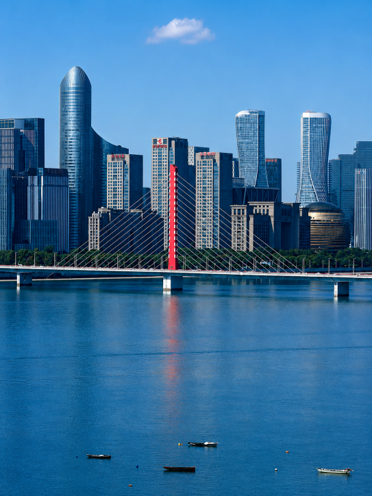
The Essentials: What You Should Actually Do
West Lake (西湖) — Yes, It's Worth It
West Lake is the reason Hangzhou exists as a tourist destination. It's a UNESCO World Heritage site, painted and written about for over a thousand years. On a misty morning, it lives up to every bit of its reputation. But timing is everything: at 10 AM on a Saturday, it's a parade of matching tour-group hats and selfie sticks. Go at 6:30 AM — the light is soft, the crowds don't exist yet, and you'll understand why poets spent lifetimes here. Rent a bike (guide here) and ride the full 12 km loop around the lake. The circuit takes you across the two causeways that are the lake's spine — and those causeways have stories worth knowing before you pedal over them.
The Su Causeway (苏堤) — running 2.8 km north to south — was built around 1090 by Su Shi (also known as Su Dongpo), one of China's greatest poets. He'd been posted to Hangzhou as governor and found the lake choking with silt. He ordered a massive dredging operation and had the excavated mud piled into a long dyke with six arched bridges, letting boats pass while creating a walking route across the water. He then planted peach and willow trees along it — the same combination that still lines the causeway today. Su Shi later wrote the four lines that forever branded this lake: "水光潋滟晴方好，山色空蒙雨亦奇。欲把西湖比西子，淡妆浓抹总相宜" — roughly, "The shimmering water looks best in sunlight; misty hills are just as lovely in rain. I would compare West Lake to Xi Shi, the great beauty of ancient China — she is captivating whether in light makeup or heavy adornment." That poem gave West Lake its nickname, 西子湖 (Xi Zi Lake), and it still holds: the lake is beautiful in every weather except heavy fog. Spring is the best time to ride the Su Causeway, when the peach blossoms are out and the willows are fresh green.
The Bai Causeway (白堤) — 1 km across the northern end of the lake, from the eastern shore to Solitary Hill — carries the name of Bai Juyi, the great Tang-dynasty poet who governed Hangzhou from 822 to 824. Bai Juyi built his own flood-control dyke near the city wall (long since vanished), but this particular causeway was renamed in his honor centuries later. He'd already written about it, describing his favorite walk: "最爱湖东行不足，绿杨阴里白沙堤" — "I love the east side of the lake most of all — I could never walk there enough; the White Sand Causeway, shaded by green willows." The Bai Causeway is also where you'll find Broken Bridge (断桥), famous for the winter scene "Remnant Snow on the Broken Bridge" — and, if you know the legend, the spot where the white snake spirit Bai Suzhen first met the mortal scholar Xu Xian in one of China's most famous love stories. In spring and summer the causeway is a tunnel of green willow fronds; in winter, when snow dusts the bridge, it's the most photogenic spot on the lake.
The lake also has three islands, all reachable by boat. The largest — 小瀛洲 (Xiaoyingzhou, "Lesser Yingzhou") — is a water garden built from dredged silt in 1607: an outer ring-shaped embankment enclosing an inner lake, crossed by zigzag bridges. Off its southern shore stand the three small stone pagodas that create the scene 三潭印月 ("Three Pools Mirroring the Moon"), the most iconic image of Hangzhou — and the picture on the back of the ¥1 RMB note. On the night of the Mid-Autumn Festival, candles are lit inside the pagodas and the glow combines with the moon's reflection. The second island, 湖心亭 (Mid-Lake Pavilion), dates to 1552 and is the oldest — essentially a single elegant pavilion floating in the exact center of the lake. The third, 阮公墩 (Ruan's Mound), was built in 1809 by the Qing-dynasty scholar-governor Ruan Yuan during another round of lake conservation; it's the smallest and most rustic, now a bamboo-shaded garden. Unless you're on a tight schedule, take a short boat trip out to at least Xiaoyingzhou — seeing the lake from inside it is a completely different experience.
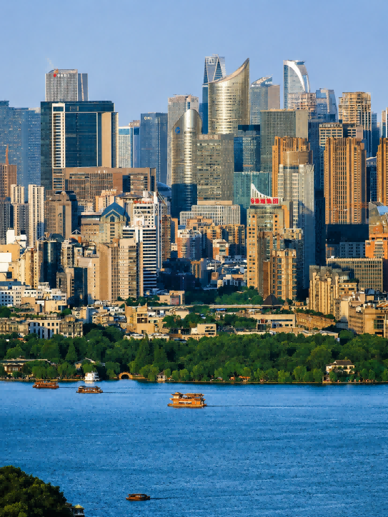
Lingyin Temple (灵隐寺) — Ancient, Crowded, Still Worth It
One of China's largest and most important Buddhist temples, tucked into forested hills 1,700 years ago. The Feilai Feng grottoes — hundreds of Buddhist carvings in the limestone cliffs — are the real highlight. Entry is free with real-name reservation; at time of writing, reservations must be made at least one day ahead and same-day bookings are not accepted. Foreign visitors can reserve through the "杭州灵隐飞来峰" mini program in Alipay or WeChat. Reservation rules can change — check the mini program before you go. Go on a weekday morning if possible — free entry makes the crowds even heavier. The vegetarian noodle restaurant inside the temple grounds is actually good — not a tourist trap, genuinely worth eating there.
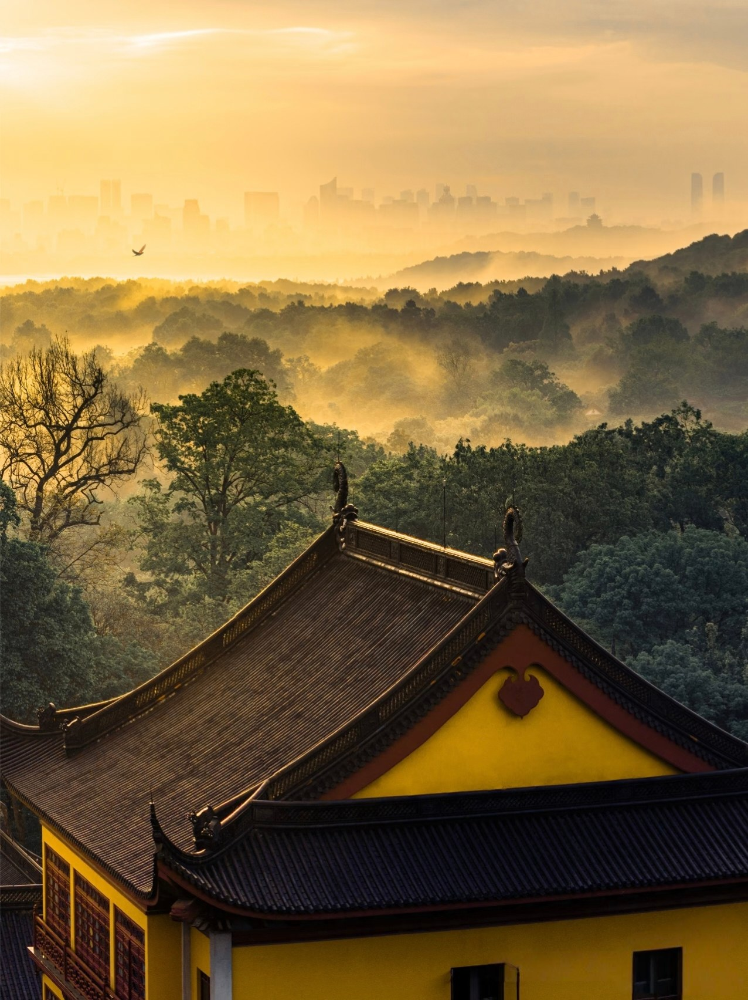
Tea Villages — The Real Hangzhou
Longjing Village (龙井村) is the most famous — "Dragon Well" tea, the most prestigious green tea in China — but it's become a bit of a tourist conveyor belt. Better: Meijiawu (梅家坞), 15 minutes further into the hills. Terraced tea fields, family-run restaurants with tables set up between the rows, and tea farmers who'll let you watch them roast leaves in iron woks. Go in late afternoon, sit at a farmhouse restaurant overlooking the fields, and eat home-style Hangzhou food while the light turns golden over the hills. This is what people mean when they say Hangzhou is special.
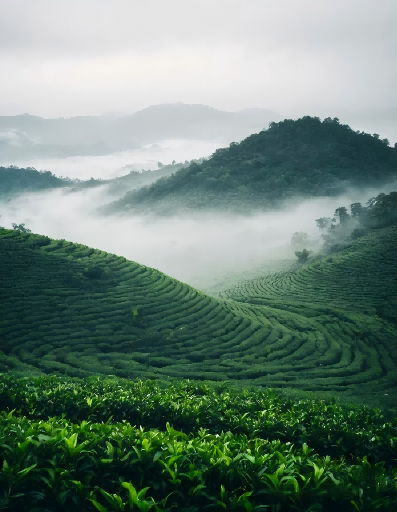
Leifeng Pagoda (雷峰塔) — Go for the View, Not the Museum
The current pagoda is a 2002 reconstruction with escalators and an elevator — not ancient China. But the view from the top, looking down on West Lake from above, is the best panorama in the city. Go an hour before sunset, ride the elevator up, and watch the lake change colors as the sun drops. The original pagoda's foundations are preserved in the basement if you're interested in archaeology. Entry: ¥40.
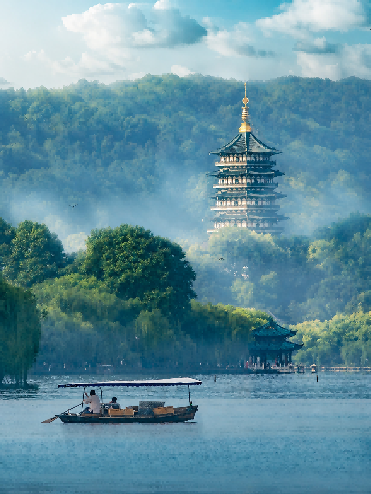
The Old City Quarter: Hefang, Imperial Street & the Lanes
Tucked between Wushan Hill and Zhongshan Road is Shangcheng District's most intact old neighborhood — four connected pieces that together form the deepest dive into old Hangzhou you can take without leaving the city.
Start with Southern Song Imperial Street (南宋御街). Eight hundred years ago, this 4-kilometer avenue paved with over 10,000 flagstones was the central axis of Lin'an, the imperial capital. Emperors processed down it for ancestral rites at the royal temple; it was the spine of one of the world's largest cities. Today it runs under the modern Zhongshan Road, with excavated sections visible through glass panels in the pavement. The street is flanked by both century-old brands and new arrivals — 胡庆余堂 (founded 1874) and 方回春堂 (founded 1649) still dispense herbal prescriptions from wooden drawers that haven't changed in a hundred years, while a few doors down, a Starbucks occupies a restored Song-style building and a sneaker shop displays rare Be@rBrick collections in a former silk merchant's storefront.
Hefang Street (河坊街) branches off the Imperial Street — the tourist-facing strip of restored Ming and Qing shopfronts. Lanterns at night, crowds on weekends, plenty of snacks worth trying — stinky tofu, scallion-stuffed crepes, osmanthus cakes. It's a solid food street, and the prices are reasonable. But for the real depth, turn north: a two-minute walk brings you into Dama Lane (大马弄), Hangzhou's most famous open-air market street. Come at 8 AM and you'll find grandmas haggling over vegetables, vendors hanging braised ducks from hooks, and the smell of fresh soy milk from 游埠豆浆 — a shop that's been pouring the city's best salty soy milk for close to 30 years. Grab a 葱包烩 (scallion-stuffed crepe) from 吴阿姨's stall (she became locally famous after feeding Olympic athletes), then follow the lane into Shiwukui Lane (十五奎巷), a quiet residential alley where 新周记 has been serving Hangzhou classics from its Drum Tower location since long before anyone called food "Instagrammable."
Between 蒋师傅酥鱼 (crispy fish drenched in sweet-savory sauce, fried while you wait), 徐奶奶杭菜 (a 70-year-old lady selling the city's most famous braised pork intestines from her courtyard), and the pan-fried buns and sticky rice cakes at every other stall, you'll eat better here for ¥80 than at most ¥300 restaurant meals near West Lake. This isn't a theme-park version of "old China" — it's a living neighborhood where people still live, shop, and eat. The new stuff has to fit into the old bones rather than replace them.
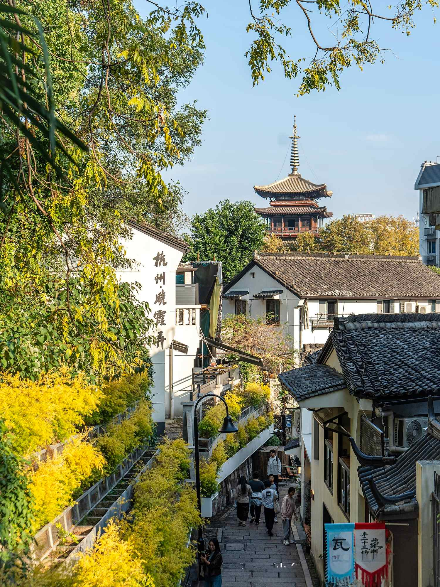
What to Eat: Beyond "Chinese Food"
Hangzhou cuisine (杭帮菜) is one of China's great regional cooking traditions, and it's nothing like the Sichuan-heavy, chili-oil image most foreigners have of Chinese food. It's subtle, seasonal, and emphasizes the natural flavor of ingredients. Key dishes:
- Longjing Shrimp (龙井虾仁) 🍤 — River shrimp stir-fried with young Dragon Well tea leaves. Light, delicate, the dish that best represents Hangzhou. Looks simple, tastes complex.
- Dongpo Pork (东坡肉) 🥩 — Braised pork belly named after Su Dongpo, the 11th-century poet-governor who allegedly invented it. Melts in your mouth, rich but not heavy. One piece is plenty. Have it with rice.
- West Lake Vinegar Fish (西湖醋鱼) 🐟 — Grass carp poached and dressed with a sweet-sour vinegar sauce. An acquired taste — the sauce is darker and more complex than what Western palates expect from "sweet and sour." I like it, but about half the foreigners I've hosted don't finish their plate.
- Beggar's Chicken (叫花鸡) 🐔 — A whole chicken stuffed with mushrooms and aromatics, wrapped in lotus leaves and clay, then slow-roasted. Cracked open at your table. Theatrical and genuinely delicious.
- Pian'er Chuan (片儿川) — Hangzhou's signature noodle soup: thin slices of pork, pickled vegetables, bamboo shoots in a clear broth. Available at every noodle shop in town for ¥15–25. This is the dish locals actually eat for lunch, not the "famous" ones above.
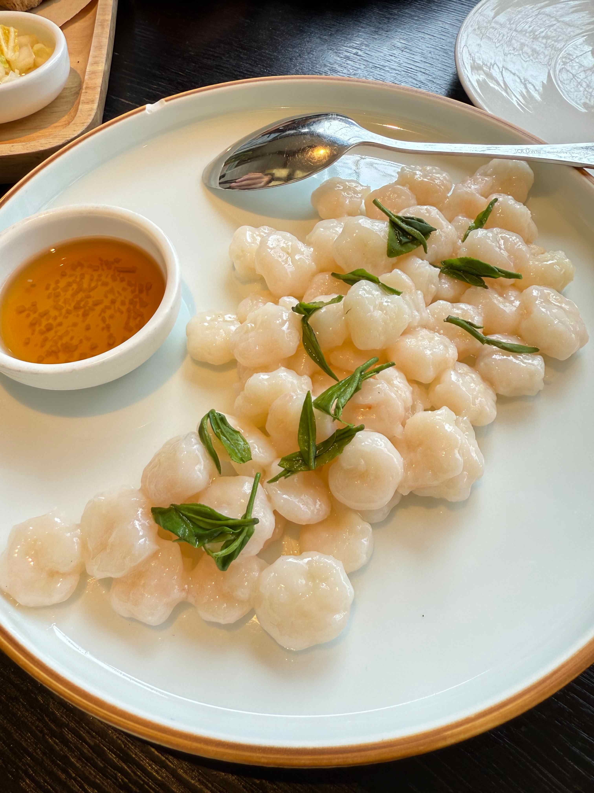
That's the classic stuff. But Hangzhou's food scene today operates at every altitude. At the top end, restaurants like 金沙厅 (Jin Sha at the Four Seasons) and 解香楼 (Jie Xiang Lou) have put modern Hangzhou cuisine on the global map, though they come with fine-dining price tags. In the middle, old-name institutions like 杭州酒家 (Hangzhou Jiujia, open since 1921) and 知味观 (Zhiweiguan, the city's most famous snack-and-dining hall, going strong since 1913) serve solid classic dishes at ¥60–120 per person — a full table for what one dish costs uptown. And then there's street level: tiny noodle shops where the owner has been making one thing for twenty years, hole-in-the-wall 生煎包 (pan-fried buns) joints with lines out the door at breakfast, and the Instagram-era wave of stylish little cafés and dessert shops that have turned中山中路 and the lane houses around Gongshu into a weekend browsing ritual for locals. You can eat brilliantly in this city at ¥25 or ¥2,500 — the range is part of the appeal.
And if you need a break from Hangzhou food entirely? The city has you covered. Thanks to waves of internal migration, you can eat your way across China without leaving town — Sichuan hot pot, Xinjiang lamb skewers, Cantonese dim sum, Dongbei dumplings. Western options run from burger joints to Italian trattorias to brunch spots in the Binjiang tech district that wouldn't look out of place in Brooklyn. Halal restaurants are clustered around the Phoenix Mosque (凤凰寺) on Zhongshan Road, serving Lanzhou-style hand-pulled noodles and northwest Chinese barbecue. For vegetarians, Buddhist temple restaurants — especially the one at Lingyin — offer elaborate multi-course meals that are an experience in themselves, and plant-forward cafés have been popping up in the Xihu and Gongshu districts over the past few years.
Hidden Corners Tourists Never Find
Manjuelong (满觉陇) in Autumn
The whole village smells like osmanthus flowers in September and October. It's a hillside neighborhood of tea houses and small restaurants where Hangzhou people go to escape — almost no foreign tourists know about it. Come for lunch at a terrace restaurant, walk the stone paths between houses, and buy a jar of osmanthus honey from someone selling it from their front door.
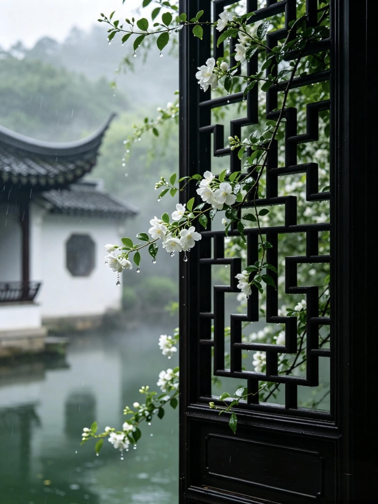
Xixi Wetlands (西溪湿地)
China's first national wetland park — 1,150 hectares of ponds, waterways, and reed marshes. You take a wooden boat through narrow water lanes past traditional houses on stilts. It's quiet, green, and feels nothing like the rest of Hangzhou. Very few foreign tourists come here; it's mostly local families on weekend outings. Budget 3–4 hours. Entry + boat ride: about ¥140.
The place comes with a good story. In 1129, Emperor Gaozong of the Southern Song fled south to Hangzhou with his court, pursued by Jin armies. He arrived at Xixi and was so taken by the landscape — reed flowers like snow, still water winding through willow banks — that he wanted to build his palace right there. His advisors eventually talked him into Phoenix Hill instead, the more defensible high ground that would become the imperial city of Lin'an. As he left, he looked back and said three words: "西溪且留下" — "Xixi, let it stay." That phrase gave the neighboring town its name, 留下 (Liuxia), which it still carries nine centuries later. The emperor never did build his palace here, but he ordered a road cut through the wetlands so he could return each spring for the plum blossoms. Today you're paddling through the same reeds that made an emperor pause mid-flight — and they still look the part.
The Qiantang River Tidal Bore
Once a year, around the Mid-Autumn Festival (September/October), the Qiantang River produces the world's largest tidal bore — a wall of water that rushes upstream at up to 40 km/h. It's been documented here for over 2,000 years. If your trip coincides with it, go to Yanguan Town (about an hour east of Hangzhou) and watch it from the riverbank. It's not a "hidden" thing — thousands of locals show up — but it's almost completely unknown to foreign tourists. Check dates online before planning around it.
Night Walk Along the Grand Canal
The Beijing-Hangzhou Grand Canal is the world's longest man-made waterway, and its southern terminus is right here. The area around Gongchen Bridge (拱宸桥) at night is one of my favorite places to walk: the old stone bridge lit up, canal boats drifting past, families eating at waterside restaurants. No admission fee, no opening hours, no crowds. Start at Xiaohe Straight Street (小河直街) and walk north.
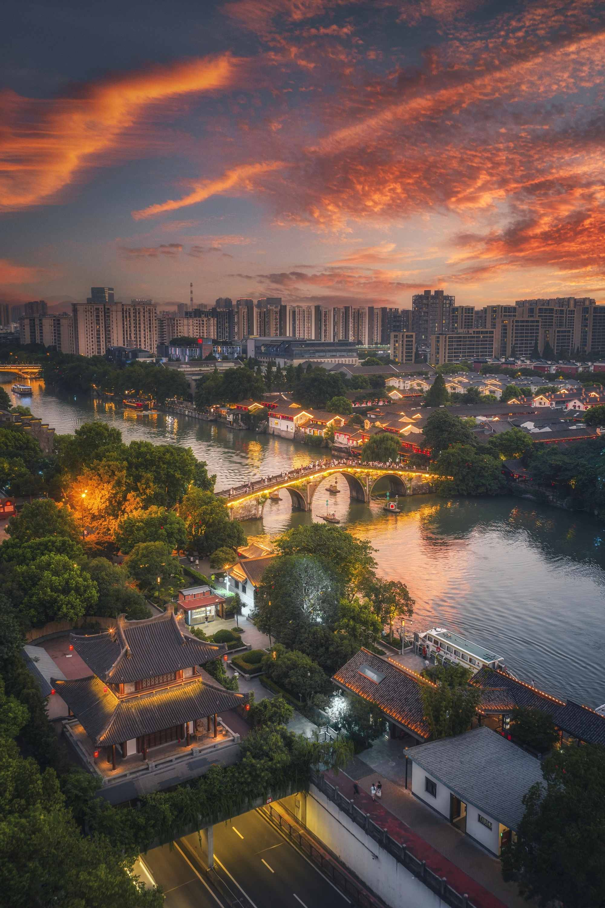
Getting Around Hangzhou
Hangzhou is one of the easiest Chinese cities to navigate. The metro system is modern and expanding — Line 1 connects the east railway station, downtown, and West Lake. Metro is usually the fastest way from the airport into the city — budget 35–60 minutes depending on your hotel location and transfers. Fares are usually under ¥10.
- Metro: 12 lines and growing. Clean, air-conditioned, announcements in English. ¥2–8 per trip. Use Alipay's Transit QR code — full guide here.
- Shared bikes: Everywhere. Hellobike (blue) and Meituan (yellow) are the most common. Unlock with Alipay scan. ¥1.5–3 per ride. Full guide here.
- DiDi: Reliable and cheap. A 20-minute ride across the city costs ¥25–40. Full guide here.
- Walking: The lakeside areas, hills, and tea villages are best explored on foot. Hangzhou rewards walking in a way Shanghai and Beijing don't.
Night Markets: Where the City Actually Eats After Dark
Chinese cities come alive at night in a way that surprises most first-time visitors, and Hangzhou has several distinct night markets worth knowing about. Not the tourist version — the ones where locals go.
武林夜市 (Wulin Night Market) is the big one. Tucked along Wulin Road and Longyou Road in Gongshu District, it packs nearly 200 stalls into a pedestrian strip lit up like a carnival. This is where you come for volume and variety — traditional Hangzhou snacks (葱包烩, sticky rice lotus root, 定胜糕) next to Changsha stinky tofu, Thai cheese sticks, and Vietnamese spring rolls. There's also a strong craft-and-handmade scene: embroidery, leatherwork, calligraphy, young artists selling prints. It's the most photogenic of the markets and the easiest to reach — walk from West Lake in 10 minutes, or take Metro Line 1 to Fengqi Road. Open roughly 17:00–23:00.
吴山夜市 (Wushan Night Market) is the veteran. This was Hangzhou's original night market, and while it's shifted locations over the decades, it still runs on Renhe Road near Huixing Road in Shangcheng District. The balance tilts more toward stuff than food — about three-quarters of the stalls sell clothes, accessories, and knickknacks. Bargaining is expected, and on a good night you can find interesting things. There's food too: skewers, fried noodles, the usual suspects. It opens around 18:00 and runs late. Metro: Ding'an Road (Line 1).
胜利河美食街 (Shengli River Food Street) is less a market and more a canal-side restaurant row. Thirty-odd eateries line the water in Gongshu District, red lanterns strung between whitewashed buildings. This is where locals go for late dinner and drinks — 老头儿油爆虾 (Old Man's Oil-Blasted Shrimp, a Hangzhou institution), beef offal hotpot, 小厨师沈家门海鲜 (fresh seafood from the Zhoushan fishing ports). Grab an outdoor table by the canal, order a cold beer, and watch the boats drift past. 17:00–次日2:00. Closest landmark: Xiangji Temple.
If you're staying in Qiantang District, the newer 吾角金街 (Wujiao Jinjie) night market near Jinsha Avenue has 100+ food stalls and stays open past midnight — more of a student-and-young-crowd vibe. And of course Hefang Street (covered above) transforms at night when the lanterns come on, though it's more about atmosphere than serious eating.
A practical note: most night market vendors take Alipay or WeChat Pay. Cash is sometimes accepted but slows things down. And go hungry — the point isn't to sit down for a meal, it's to eat five small things from five different stalls and call it dinner.
Send Me the Checklist →
Common Mistakes First-Time Visitors Make
- Trying to "do West Lake" in 2 hours. It's not a single attraction. It's a 12 km loop with dozens of spots worth stopping at. Budget at least half a day, ideally a full morning + afternoon.
- Going to Lingyin Temple on a weekend at 10 AM. You'll spend the whole time in a crowd. Weekday morning, or don't bother.
- Staying near the train station because it's "convenient." Hangzhou East Railway Station area is transport infrastructure, not a neighborhood. Stay near the lake or in Gongshu.
- Expecting to pay with a foreign credit card everywhere. Small restaurants, tea houses, and street vendors take Alipay or WeChat Pay. Cash is legal but cumbersome. Set up Alipay before your trip. Guide here.
- Packing a 7-city itinerary with Hangzhou as a day trip. Hangzhou is a 3-5 day city minimum. One day means you'll see West Lake, take a photo with a tour group, and leave without understanding why anyone calls it beautiful.
Practical Tips
- Download Amap (高德地图) before you arrive. Google Maps is inaccurate in China. Amap — in Chinese, but with maps that actually work — is what locals use. The app has bare-bones English for navigation. More apps here.
- Hangzhou Xiaoshan Airport (HGH) is about 30 km east of downtown. Metro is usually the fastest option — budget 35–60 minutes depending on your hotel location and transfers. Fares are usually under ¥10. DiDi costs ¥100–150.
- Visit West Lake on foot or bike, not by tour bus. The bus tour shows you the lake through a window, which misses the entire point.
- Green tea is everywhere. Drink it. Even the free tea at restaurants is usually decent Longjing.
- Bring comfortable walking shoes. Hangzhou is a city of hills, stone paths, and long walks. You'll regret heels or stiff dress shoes by noon.
Get the Free China Arrival Checklist
The exact setup guide I send to friends before they visit China — Alipay, VPN, eSIM, and everything you need for your first 48 hours.
Send Me the Checklist →